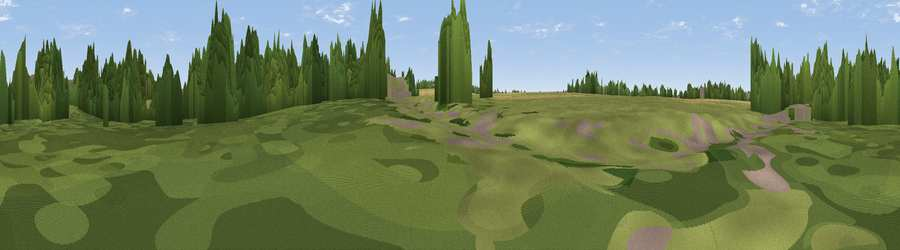

Viewpoint near Church End
#45470 in England · top 88% of its area beats it · near Church EndWhere it is
The exact computed spot (TL 20259 36856). Click the marker for map links.
The view, rendered

A 360° render of this exact spot computed from the terrain model, tree cover and land cover — summer colours, afternoon light, calibrated against photographs of famous viewpoints. Real trees, hedges and buildings will differ in detail.
The panorama
Grey silhouette: terrain skyline in each direction (720 bearings, Earth curvature and refraction included). Dashed green: skyline with trees (+15 m) and buildings (+8 m) as obstacles. Blue strip: how far the ground is visible on each bearing.
Where the view opens
Wedge length = distance to the farthest visible ground on that bearing (vegetation-aware). Rings at 10, 25 and 50 km.
What fills the view
39% woodland · 38% grassland · 17% cropland · 6% built-up
Angular shares of the visible panorama (visual magnitude), not map area. Landscape diversity 0.53 (0–1 Shannon).
Key numbers
More beautiful places nearby
The staircase of upgrades: each row has a higher view potential than everything closer. Driving times are estimates from straight-line distance, calibrated against real road routing — check an actual route before setting out.
| Place | Direction | Drive | Score |
|---|---|---|---|
| Topler's Hill | NNE · 4 km | ~8 min | 40.7 |
| Viewpoint near Baldock | SE · 6 km | ~14 min | 53.9 |
| Viewpoint near Great Offley | SW · 10 km | ~20 min | 54.4 |
| Viewpoint near Hexton | SW · 11 km | ~20 min | 65.4 |
| Viewpoint near Church End | SW · 25 km | ~41 min | 65.8 |
| Beacon Hill | SW · 31 km | ~49 min | 74.1 |
| Viewpoint near Halton | SW · 41 km | ~61 min | 74.3 |
| Coombe Hill Monument | SW · 46 km | ~67 min | 75.5 |
52.01711, -0.24897 · source: osm viewpoint · position refined by local search. Computed location — check access rights before visiting.